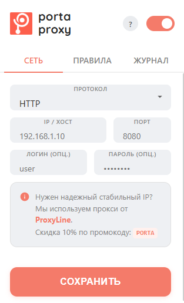
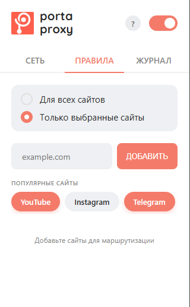
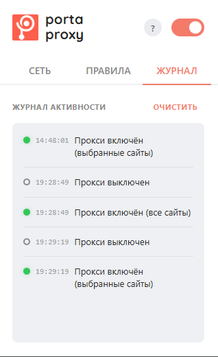
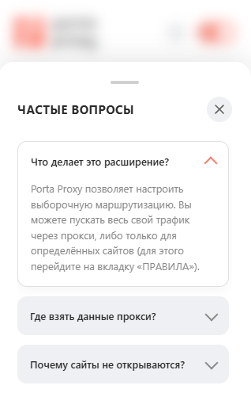

Элитный инструмент для выборочной маршрутизации трафика (PAC). Cinematic "1:1 Pixel Perfect" iOS-like интерфейс, Smart Paste, автообход блокировок и строгий монобрендинговый дизайн. Сделано без внешних зависимостей.




Динамическая генерация PAC-скриптов (Proxy Auto-Configuration) на лету. Проксирует только выбранный трафик (например, Instagram/YouTube) не замедляя работу остальных сайтов.
"Apple-like" дизайн: никаких банальных системных полей ввода, строгая моно-палитра, микро-анимации на 0.2s и frosted glass blur для модальных окон.
Автоматическое распознавание 5-ти форматов вставки (например, IP:Port:Log:Pass). Разбирает строку через RegEx и заполняет все поля за 1 миллисекунду с визуальным flash-эффектом.
Собственный модуль логирования активности. Хранит до 30 последних событий в chrome.storage. Отображает UI с геометрическими CSS-индикаторами (без сырых эмодзи).
Собственный движок вкладок. Реализует overlapping crossfade (слайд-переходы между вкладками СЕТЬ, ПРАВИЛА, ЖУРНАЛ) используя только CSS-трансформации.
Перехват `webRequest.onAuthRequired` для работы с приватными прокси. Расширение само передает авторизационные данные в фоне — никаких всплывающих окон от браузера.